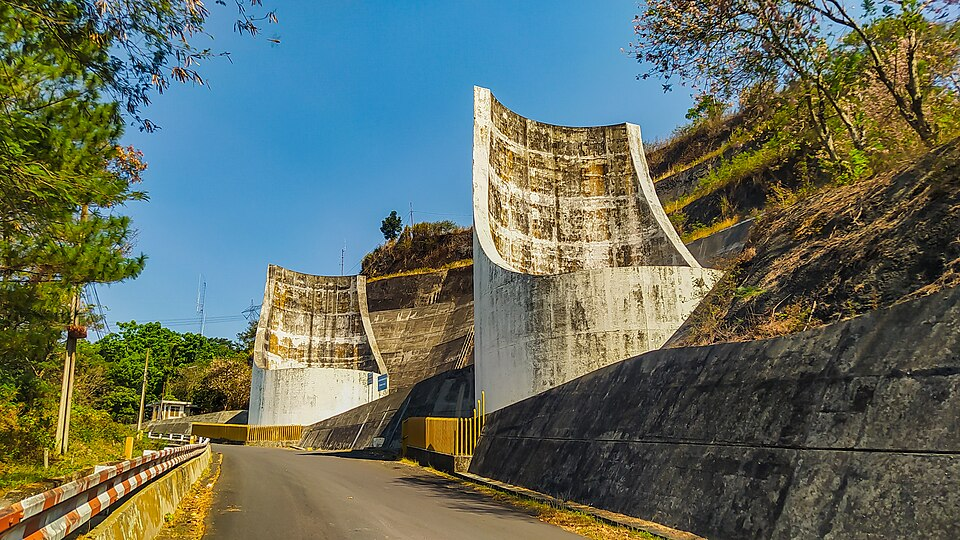

Por qué golpean las cañerías al cerrar una canilla
Cerrás de golpe una canilla y se escucha un «toc» en la pared. Ese ruido es la versión casera de un fenómeno que puede reventar acueductos y que, a principios del siglo XX, preocupaba seriamente a las centrales hidroeléctricas. El agua que venía viajando por el caño no puede frenar toda a la vez, y la diferencia se paga en presión.
Solemos pensar el agua como incompresible, y casi siempre podemos. Pero al cerrar una válvula de repente, esa aproximación falla. El agua pegada a la válvula se detiene de golpe, se comprime un poco y su presión sube. Esa perturbación no llega instantáneamente al resto del caño: viaja como una onda, a la velocidad del sonido en el agua dentro de esa cañería. Detrás de la onda, el agua está quieta y a alta presión; delante, sigue avanzando como si nada.
La sobrepresión se calcula con la ecuación de Joukowsky, que Frega y sus coautores señalan como la ecuación fundamental de estos estudios [1]:
La sorpresa está en el valor de c. En un caño rígido, c = √(Eb/ρ), donde Eb es el módulo de compresibilidad del agua, 2,1 × 10⁹ N/m² [2]. Da unos 1450 m/s (un cálculo propio). Entonces, frenar agua que iba a apenas 1 m/s produce una sobrepresión de 1,45 MPa, unas 14 atmósferas, equivalente a una columna de agua de unos 150 metros (un cálculo propio). Es un número enorme para una velocidad tan modesta, porque la onda es muy rápida.
El tren que frena: imaginá un tren de vagones que choca contra un paragolpes. El primer vagón frena enseguida, y el aviso de frenar va pasando de vagón en vagón, cada uno apretándose contra el anterior. El agua hace lo mismo, con la compresibilidad haciendo de resorte entre los «vagones», y con el aviso viajando a más de mil metros por segundo.
Cuando la onda llega al depósito del otro extremo, se refleja y vuelve hacia la válvula. Ese viaje de ida y vuelta tarda un tiempo que divide todo el problema en dos, como explica Arturo León, de la Universidad Internacional de Florida [2]:
Si la válvula se cierra en menos de ese tiempo, el cierre es brusco y vale Joukowsky entera: la onda de alivio no alcanza a volver a tiempo. Si tarda más, el cierre es gradual, y la sobrepresión es de aproximadamente ΔP = ρ L V₀ / t, proporcional al largo y a la velocidad, e inversamente proporcional al tiempo de cierre [2].
En una instalación domiciliaria de 20 metros, 2L/c es de unas tres centésimas de segundo (un cálculo propio): una canilla de cierre rápido se cierra de golpe a estos efectos. En un acueducto de un kilómetro, 2L/c es de alrededor de 1,4 segundos, y cerrar la válvula en 30 segundos baja la sobrepresión de 1 m/s de agua a unos 33 kPa (un cálculo propio). Por eso las grandes válvulas se cierran despacio. Y no solo importa cuánto se tarda, sino cómo: en los ensayos de Damiani en redes del Acueducto Pugliese, analizados por Frega y coautores, las últimas vueltas de la válvula resultaron ser las peligrosas [1].
Un caño que cede: un caño real no es rígido. Se ensancha un poco con la presión y eso hace la onda más lenta. La velocidad depende del material, de la relación entre el diámetro y el espesor de la pared y de cómo está anclada la cañería [2]. Para un caño de acero de 30 cm de diámetro y 1 cm de pared, sale del orden de 1270 m/s, en vez de 1450 (un cálculo propio con la fórmula de [2]). El caño absorbe parte del golpe: por eso, cuanto más rígido el material, mayor la sobrepresión.
Según la reseña de Frega, Costanzo y Frega, el problema fue estudiado por primera vez por Menabrea en 1858, y Michaud examinó en 1878 el uso de cámaras de aire y válvulas de seguridad para combatirlo [1]. Weston, Carpenter y Frizell intentaron después obtener expresiones para las variaciones de presión y velocidad, y las contribuciones decisivas llegaron con Joukowsky y con Allievi [1]. Los primeros trabajos de Allievi nacieron de accidentes por cierres rápidos de válvulas en centrales del norte de Italia [1]. El interés se extendió después a los acueductos [1].
Las defensas siguen siendo esas ideas. Cerrar lentamente aleja el problema, y una cámara con aire ofrece un resorte blando que absorbe el golpe (un razonamiento propio a partir de lo anterior); también existen tanques supresores de sobrepresión [2]. El «toc» de la pared tiene una explicación simple: un pulso de presión recorre un caño que no está perfectamente fijo y lo sacude contra lo que tiene alrededor (un razonamiento propio).

El golpe de ariete no solo sube la presión. El análisis de un cierre incluye la presión mínima, porque la onda también puede bajarla, y el ejemplo de León pide comprobar si eso produce cavitación [2].
Al cerrar una válvula, el agua frena de a poco, de la válvula hacia atrás, y el frenado viaja como una onda de presión a más de mil metros por segundo. Por eso, un cambio de velocidad chico produce una sobrepresión grande: ΔP = ρ c ΔV. Si la válvula se cierra en menos de 2L/c, se paga el precio completo; si se cierra más despacio, la sobrepresión baja. Es una de las pocas situaciones en las que la compresibilidad del agua se hace notar en la vida cotidiana.
Pregunta para la comunidad: Si un caño tiene burbujas de aire atrapadas, ¿qué le pasa a la velocidad de la onda de presión? ¿Eso aumentaría o reduciría la sobrepresión de Joukowsky?